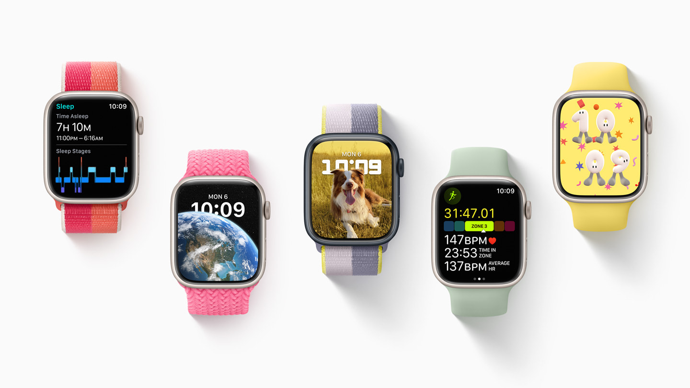

Google acquirers Fitbit after approval from European regulators Read more

Apple Watch Series 9: Latest Rumors Read more

Simple watches came long before the smart watch, originating from pocket watches between the 15th and 16th century. The popularity and widespread availability of 'wrist watches' (what we call today as simply 'watches') began in the 19th century, and has developed since, evolving to highly advanced watches including mechanical, automatic, electrical and quartz watches, all at a varying price. Some of these watches also included the date (day/date/month). 'Digital watches': battery-powered watches that displayed the time and usually date on a LED or LCD screen gained popularity in the 1970s and has led to the evolution to smart watches.

These devices also provide health stats, and many are often focused towards living towards a healthy life. Some of these watches also include many safety features, including abnormal heart rate monitors, fall detections, Sp02 monitors and sleep pattern trackers. Along with these health safety factors, most of them also include SOS Assistances features, which usually comprise of two tools: notifying emergency services, and notifying selected friends/family members of your whereabouts.
Smart watches obviously include the original idea of watches: ability to tell time. Further to this, they also offer simple date information at a glance: the beginning of more advanced calendar features.
Smart (or specifically ‘fitness’ type) watches also usually include physical tracking metrics including steps, distance (km/miles), calories burnt, active (intensity) minutes, heart rate trackers, and sleep data, including other statistics based on sleep like ‘body battery’ or ‘awake metres’. They also usually include goal alerts, for example reaching 10,000 steps, or a desired amount of ‘active’ minutes. On top of these ‘background’ trackers, many watches allow the ability to record many different activities including: running, biking, walking, swimming, strength training, yoga, pilates, stair steppers, indoor walking/running and many others. Outside activities often use the onboard GPS (global positioning system) to measure distance, speed and map out activities. Many watches also include automatic activity detection that records what it thinks is activities based on past behaviors. Some fitness smart watches also allow for waist (strap) heart rate monitors to be connected to the watches.

A more minor yet still important feature of Smart Watches is their navigation (usually GPS) features. This is also includes the ever-important safety features, especially for children. Smartwatches allow for parents to be able to track their children when they are out and about. Through the use of common smartwatch SOS features, people can alert authorities and close friends and family if they are in an unsafe situation. Fall Detection features are also important in smart watches, especially useful for older people, and alerts authorities and close friends and family in the same way of SOS features.
Smart watches include many different entertainment features, varying from model to model. These include music, podcasts, social media, e-reading, games and sports updates. Some watches also include the ability for photo and video storage, as well as on-demand playback. This all varies based on the storage on each of these smart watches. Another key feature here is the ability to be connect to virtual (personal) assistants like Siri. These a key in improving productivity but also in accessing information quickly, through just using your voice.
Smart watches allow for 'mobile payments' which are sometimes described as a 'credit-card' on your wrist to occur. This means that people can 'tap and go' from the ease of their wrist. This is especially useful to people if they want to avoid carrying cards and wallets around. For example, many cyclists use this feature when buying coffee when on a ride.

Smart watches allow for many things, but one of the biggest is the way that it allows us to always be connected to the digital world around us. For example, we are now able to receive emails, text messages, notifications and more all from our wrist. Not only this, but replies can be effortlessly sent in a matter of seconds. The vast amount of information that can be accessed including weather, sports results, upcoming events and more all from our wrist provide us with information at any time we need it. The ability to set reminders and alarms on our wrist also keeps us ‘on-time’ and attempts to limit disruptions to our daily life is also essential in the modern world. All of the above features are available on smart phones, but smart watches 'unobtrusive' ability to do all this on someone's wrist is what makes it stand out and appropriate for digital connectivity.
However, smart watches do have some downfalls in this particular category. The main sacrifice between smart watches and mobile phones is the heavily differing screen sizes. This is especially noticeable as manufactures create larger and larger phone screens, many people 'cannot stand' to use the small screen size of smart watches. Some of the other downsides that might not make the the most appropriate for digital connectivity include: battery life, aesthetics, distractions and health concerns.

In the future, I predict that smart watches will be more technologically advanced including more sensors but also equipped with AI technology that allows the watch to better understand our life. I also see watches growing larger to allow for more technology but also larger screens that means more information can be displayed at once. Eventually in the future I see smart watches potentially replacing mobile phones or becoming the more 'important' of the two when they become complex enough. I also see smart watches lowering in price and having a wide price range in the same way that phones have in the past few years. From this, I believe that a large amount of the population will have a smart watch, be it simple (maybe combined with a new phone?) or advanced like the current mainstream watches. I also see smart watches being an important tool in the workplace across many different industries as tool to speed up activities. For example, stud finders might be wirelessly connected to smart watches to provide results as well as advanced mapping of an area.